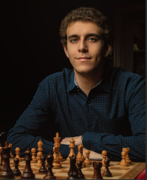

Kênh YouTube của Daniel Naroditsky không chỉ là nơi chia sẻ những kiến thức và kỹ năng chơi cờ mà còn là một cộng đồng người hâm mộ. Kênh này được biết đến với những video giảng dạy chất lượng cao, những trận đấu chess trực tiếp, và những buổi livestream hấp dẫn. Daniel Naroditsky là một Grandmaster và người đã tốt nghiệp Stanford University, những đặc điểm này đã tạo nên một kênh YouTube nổi bật trong lĩnh vực cờ vua. Daniel Naroditsky cũng được gọi bằng biệt danh như Sensei, Danya,.. Đáng tiếc thay, Danya đã không may qua đời vào tháng 10/2025, để lại nỗi tiếc thương đối với toàn thể những người yêu cờ. Di sản mà anh để lại sẽ luôn được nhớ đến trong tương lai. Bài viết này cũng là một sự tri ân dành cho Danya. Đường link kênh
